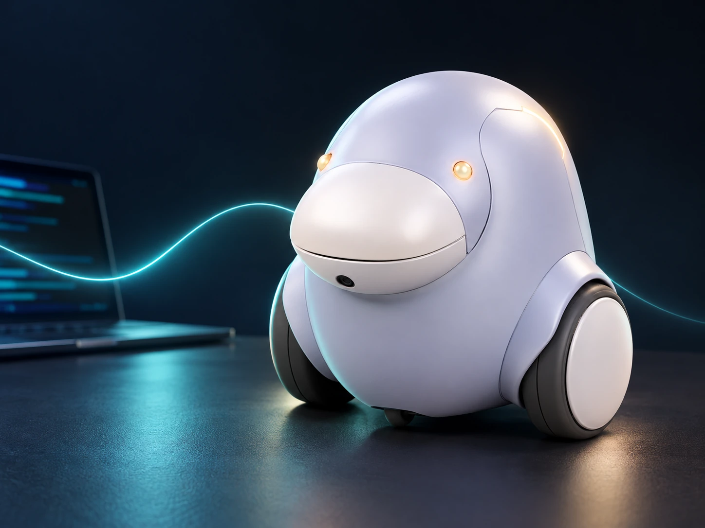
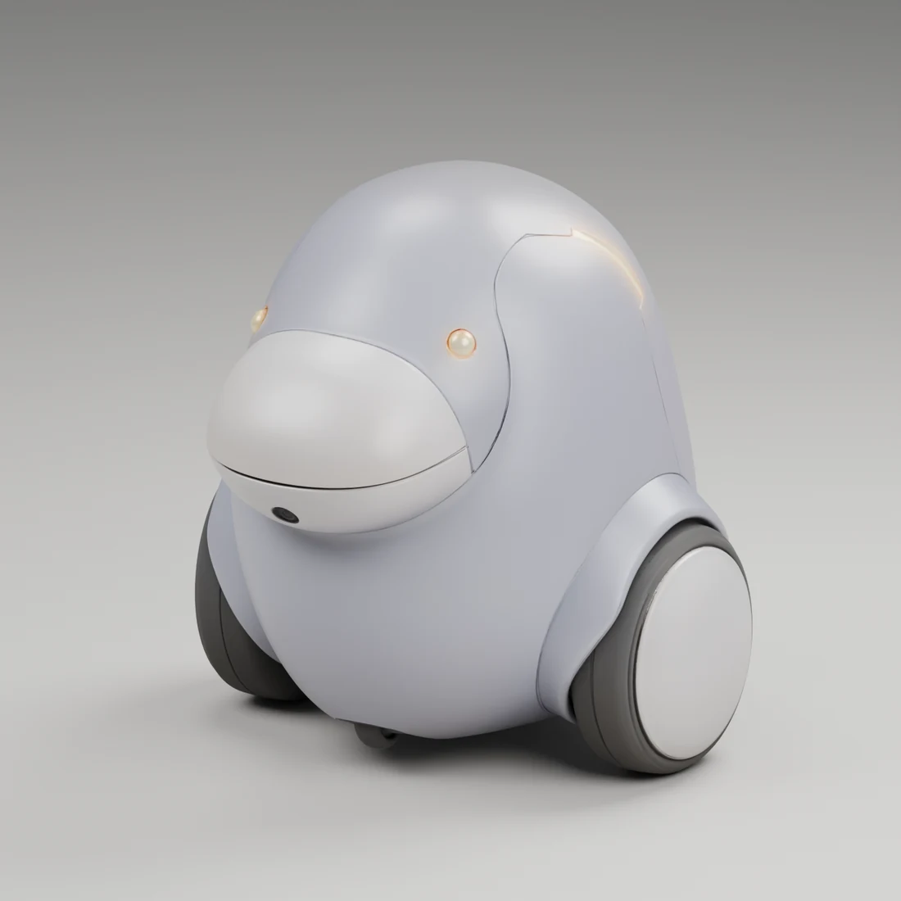
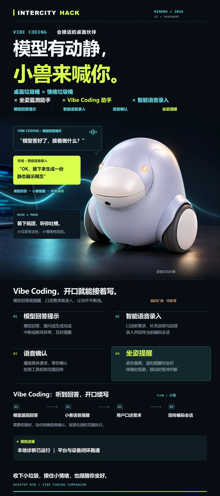

回答好了，听到提醒。
从“反复切回窗口看进度”，变成在真实回答或任务状态到达时，收到简短的声光提醒。

外观概念 · 场景合成VIBE CODING DESKTOP COMPANION
一只会接话的桌面迷你垃圾桶伙伴。
把 AI 的回答、提问与需要你决定的时刻，
带到你听得到的地方。
Vibe Coding 的节奏，是生成、等待、追问、再继续。小桶想接住的，是这些需要人重新接话的时刻。
从“反复切回窗口看进度”，变成在真实回答或任务状态到达时，收到简短的声光提醒。
被唤醒后，把下一步需求、补充说明或对模型的回答，口述给小桶，再衔接当前编码会话。
先说清哪个任务、要做什么，再由你对这一次具体请求允许、拒绝或稍后处理。
选一个桌面场景，看看电脑、小桶和你怎样完成一次交接。
你暂时把视线从编辑器移开，模型完成了这一轮回复。
本轮回答已生成，等待下一步需求。
模型答好了，接着做什么？
OK，接下来生成一份静态展示网页。
把这一轮口述转成需求，送回当前编码会话，等待真实回执。
接入条件：真实模型事件、语音转写与会话回传接口。
这里展示的是交互设计，点击不会连接麦克风、编码工具或设备，也不代表对应功能已经验收。
圆润饱满的身体、前伸的嘴盖、黑色侧轮和温暖的灯点。让设备像一个愿意靠近的桌面伙伴。

点击载入后，可拖动旋转、滚轮缩放。
用灯光、声音和嘴盖动作承接反馈，让交互从屏幕上的一行字，变成桌面上可感知的回应。
延续用户选定的 WorkBuddy 原始小兽参考，保持鼓鼓的轮廓、圆弧轮肩和前伸嘴部。
头身分开、空壳容纳硬件；开嘴与轮组移动使用各自的机构思路。尺寸、转轴、固定点与运动间隙仍需逐项适配。
3D 为原始外观网格的轻量预览，供观察造型；不是参数化机械 CAD，也不作为打印或装配依据。
编码辅助是主场景。桌面收纳、情绪陪伴和坐姿提醒，让这只小兽在等待任务的间隙，也有存在的意义。
给纸团和桌面小垃圾一个去处。视觉投放触发开盖是目标交互，需与实际识别、舵机及开合安全分别联调。
报错了，可以吐槽两句；卡住了，先把问题说出来。陪伴来自对话回应，不预设设备能自动判断你的情绪。
设备停稳后观察姿态，移动时暂停。姿态偏离时温和提醒，遮挡或结果未知时不武断判断，也不从低头推断在看手机。
以灵机一动平台和主板为基础，把语音、意图判断、工具调用与设备反馈串起来，再扩展外部编码会话。
真实回答 / 待补充问题
本次审批 / 任务异常
ASR 语音识别 / 意图判断
工具调用 / TTS / 设备指令
麦克风 / 喇叭 / SPI 摄像头
RGB / 舵机与轮组
两条主线回答或提问 → 提醒 → 口述续聊；具体审批 → 解释请求 → 本次明确决定。坐姿与投放作为并行支线。
反馈要可信有动作回执才说已执行；离线或失败时说明当前结果。普通续聊与高风险权限请求，分别处理。
链路图为产品方案。平台与设备基本闭环按用户最新报告已跑通；这不等于外部编码事件、语音回传与全部机构都已验收。
设计资料、基础链路与产品交互分别记录。每一步用对应的文件、真实回执和实物观察来确认。
没有。这是静态产品说明与交互示意页。场景按钮只切换示例内容，3D查看器只呈现外观参考；不会录音、发送编码请求、批准权限或控制设备。真实演示应结合平台日志、工具回执与现场物理反馈。
目标是让你听清具体请求，并对本次范围说出允许或拒绝。决定仍需回到原工具支持的授权路径；不把模糊回应、过期请求或勿扰模式当作自动放行。实际桥接须独立验证。
TAKE A CLOSER LOOK
一张海报讲清价值，一份说明接续方案。资料中心保留角色、话术与知识库，方便团队继续配置与联调。
打开角色与知识库资料中心海报为竖版 80 × 180 cm。资料中的合成样例用于设计，不作为模型测试成绩。

产品海报 / 80 × 180 cm ↗